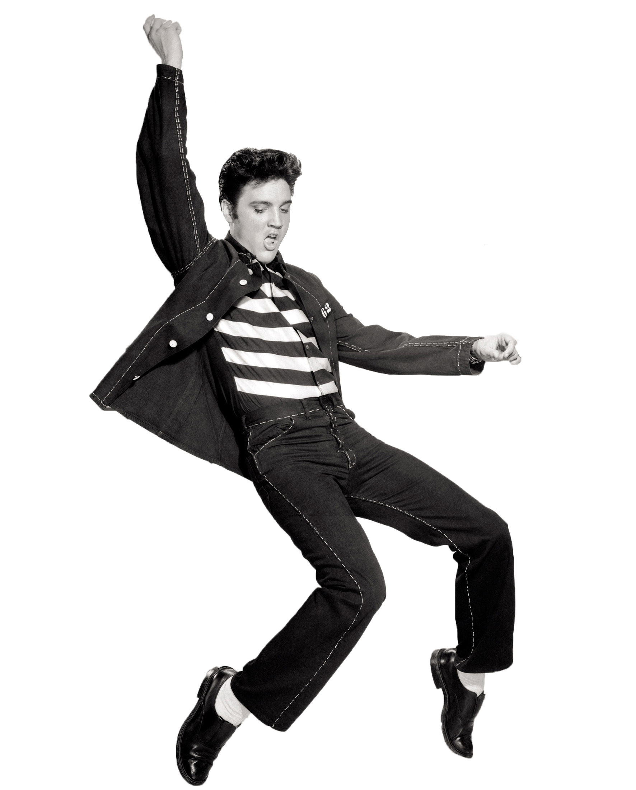

Elvis Presley

Elvis Presley
One inspirational thing about Elvis Presley is that he overcame poverty and hardship to become one of the most successful and influential musicians of all time. He was born in a two-room house in Tupelo, Mississippi, and grew up in a low-income neighborhood in Memphis, Tennessee1. He faced many challenges and rejections in his early career, but he never gave up on his passion for music. He combined different genres of music, such as country, blues, gospel, and R&B, to create his own unique style of rock and roll2. He also broke barriers and stereotypes with his charismatic stage presence and expressive voice. He sold over one billion records worldwide and earned many awards and honors, including 14 Grammy nominations and three wins3. He is widely regarded as the “King of Rock and Roll” and one of the most significant cultural icons of the 20th century2. He inspired many other artists and influenced the development of popular music and culture. He also used his fame and fortune to support various charitable causes and organizations4. Elvis Presley’s life story shows that with talent, determination, and courage, anyone can achieve their dreams and make a positive impact on the world.
Elvis Presley, (born Jan. 8, 1935, Tupelo, Miss., U.S.—died Aug. 16, 1977, Memphis, Tenn.), U.S. popular singer, the “King of Rock and Roll.” Presley was raised in Memphis, where he sang Pentecostal church music and listened to black bluesmen and Grand Ole Opry broadcasts. In 1954 he began to record for the producer Sam Phillips, who had been searching for a white singer who sounded like a black man. In 1956, under his new manager, “Colonel” Tom Parker, he released “Heartbreak Hotel,” the first of numerous million-selling hits that included “Hound Dog” and “All Shook Up.” In the same year, he appeared in Love Me Tender, the first of 33 mediocre films, and on several TV shows, notably the Ed Sullivan Show. Presley’s intensely charismatic style—including his sexy hip shaking, ducktail haircut, and characteristic sneer—excited young fans, especially females, to wild adulation. After a stint in the army (1958–60) he resumed recording and acting, but his earlier raucous style was moderated. In 1968 he introduced a Las Vegas-based touring act with orchestra and gospel-type choir. Battling public pressures, weight gain, and drug dependence, he underwent a personal decline. His death at age 42, attributed to natural causes, was mourned by hundreds of thousands of fans at Graceland, his Memphis estate, which remains a place of international pilgrimage.
Made by Hemant ♥️